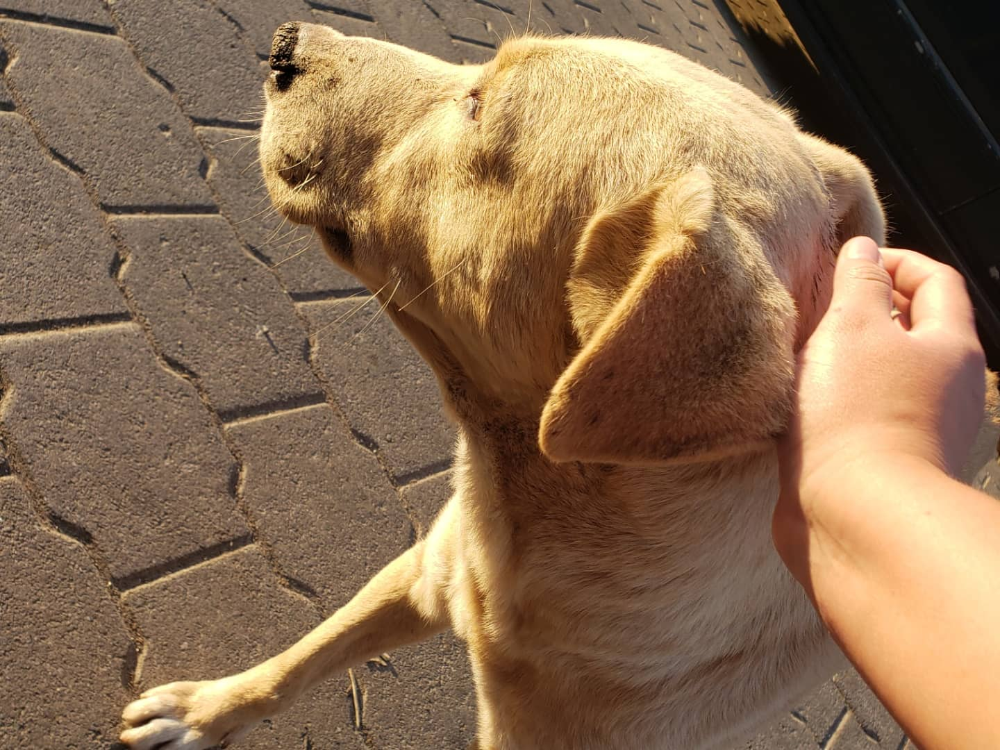

No somos más que los pensamientos de un mínimo callejero que por los azares de la vida le ha tocado que ver lo peor de las personas.
Siempre tratamos de resaltar lo bueno de la sociedad, pero así mismo hacer criticas sociales a cerca de las cosas que día a día nos van llevando a un mundo con nada de empatía.
Esperemos este sea un lugar cómodo para ti y puedas aprender algo nuevo.
¿De qué manera ayudas a la sociedad?
Siempre hemos visto por medio de redes sociales que ayudar al prójimo es hacerle favor a un amigo, estar para el vecino cuando necesite algo pero la verdad ayudar al prójimo está constituido por trabajar para todo aquel que necesita verdaderamente de ti, como aquel niño que su mamá le obliga a trabajar y al comprarle su desayuno o tener algún detalle quizá no cambiarías su vida pero si cambiarías su día, o de pronto comprar comida para aquel perro acostado en una esquina esperando encontrar algo de empatía en su día o simplemente siendo amable con alas personas que te encuentres en tu camino, tú más que nadie sabe lo que una sonrisa o un agradecimiento nos puede hacer en un mal día.
Siempre recuerda que las acciones en beneficio a los demás no siempre estarán recompensadas, si los haces de corazón ceras sus frutos en otras buenas acciones que se te regresarán en un futuro.
Por favor, si en verdad hay alguna obra social que quieras realizar recuerda que no solo esta tu privacidad sobre la mesa, sino a la persona a la que ayudarás así que por su respeto evita estar documentando todo lo que haces.

¿aprecias realmente a tu país?
Muchas veces creemos que, por subir una foto de nuestro lugar turístico favorito, tomarle foto a una cerveza o bien resaltar lo mucho que lucen los huipiles o lo feliz que te hace descansar los días festivos estipulados por la ley estamos siendo guatemaltecos de corazón, haciendo de nuestro país un lugar de honor por tener a tan buenos ciudadanos. Sin embargo cuando vas al lugar turístico que más te gusta no aportas o consumes productos locales, sino vas a la tienda/restaurante de exportación porque eso es lo que está de “moda”. Cuando le tomas foto a esa cerveza que tanto consumes no tomas en cuenta que esa misma empresa contamina los ríos y lagos del país que tanto dices amar.
Cuando dices lo bien que se ven las personas del interior con sus huipiles se te olvida llamarlos por sus nombres o los clasificas como “el chino de la tienda”, “la indita de las tortillas”, “el ishtio del lustre”, recuerda que no por ser personas que vienen de un departamento menos desarrollado del que te encuentras merecen sobrenombres o que los categorices como inferiores.
Cuando te quedas en casa gracias al día de asueto no investigas a cerca del porque es un día de conmemoración, no sé quizá un gran grupo de personas estaban luchando por sus vidas y su futuro para lograr que tu ese mismo día estes descansando.
¿Sabes cuál es la verdadera riqueza de tu país?
Probablemente si alguien te hace esta pregunta tengas en la punta de la lengua “Por medio del PIB”, y claro que es así, pero recuerda que la vida tal cual es tan compleja y por más que tengamos conocimiento de algo siempre habrá cosas nuevas por aprender y hoy aprenderás como se mide la verdadera riqueza de un país.
Cuando valoramos el trabajo de los artesanos y no les regateamos, cuando preferimos ir al mercado local a comprar verduras/frutas ayudando al agricultor de la zona, cuando damos lo mejor de nosotros mismos cada día, cuando aportamos a aquel negocio que propuso nuestra vecina.
¿En verdad disfrutas cada momento de tu vida?
Tomando en cuenta todo lo que has aprendido con las ideas anteriores que piensas a cerca de ti, ¿has hecho alguna de esas cosas?, ¿Cambiarás actitudes de tu vida? Sea cual sea tu respuesta lo que si esta seguro es que te estas evaluando y con ello te pongo de ejercicio que pienses que es lo que en verdad te da felicidad y hace sentir que haces las cosas bien, por su puesto si bien puedo sugerirte algo, no lo haré eres libre de ser feliz con lo que te plazca, solamente te agradecería si entre ello le das la importancia a las cosas más sencillas que nos regala la vida, la sonrisa de un ser querido, tiempo de calidad con tu familia, la compañía de tu mascota, el calor de un ser amado nunca estará lo suficientemente valorado tomando en cuenta que algún día no estarán a nuestro lado.